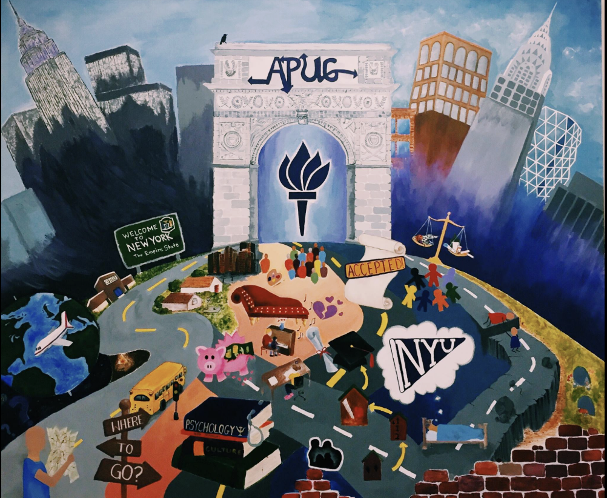
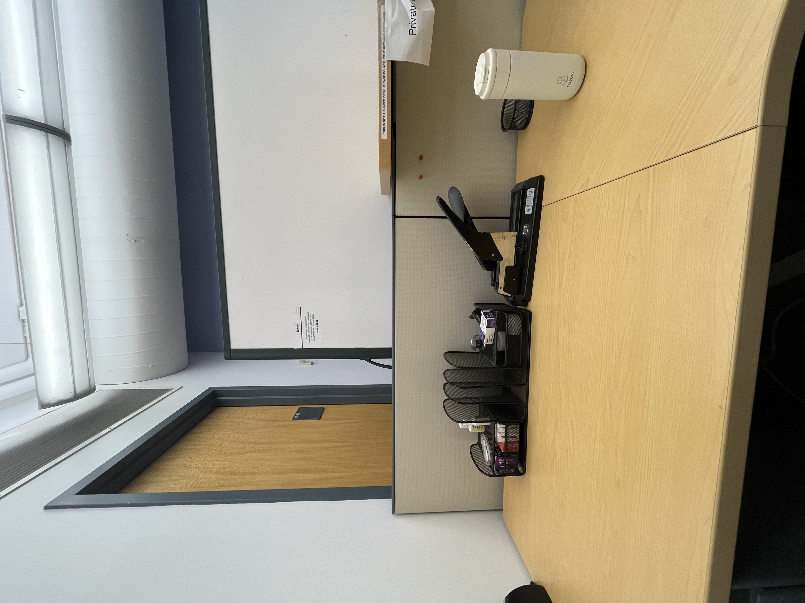
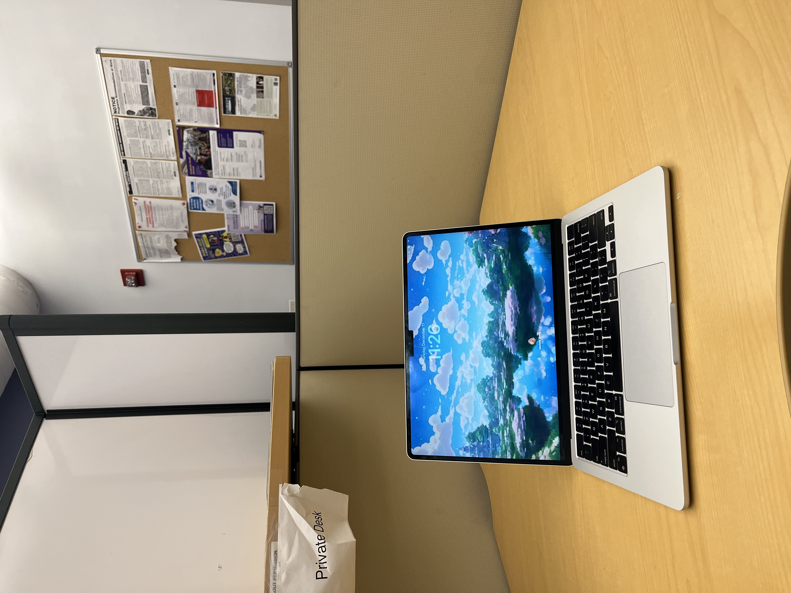
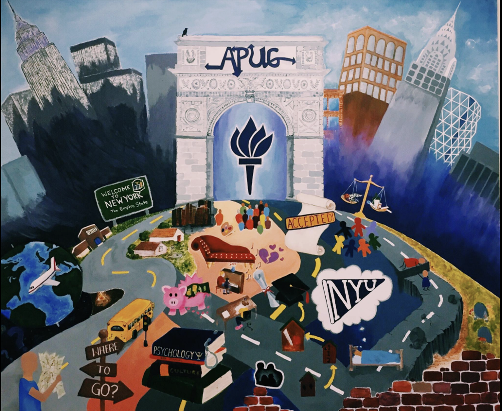
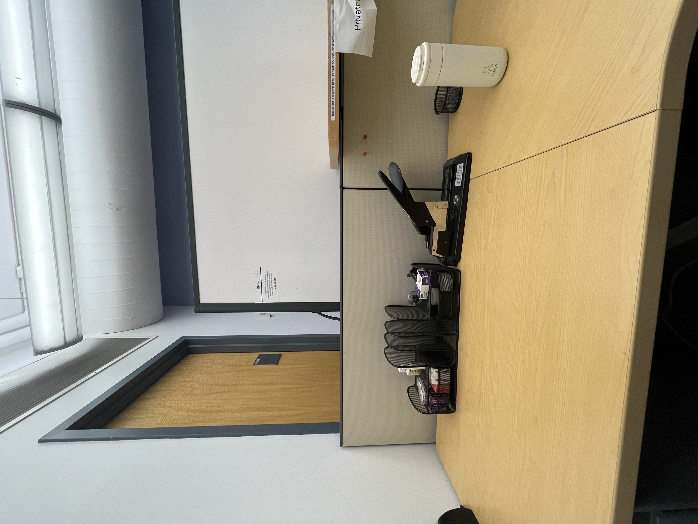
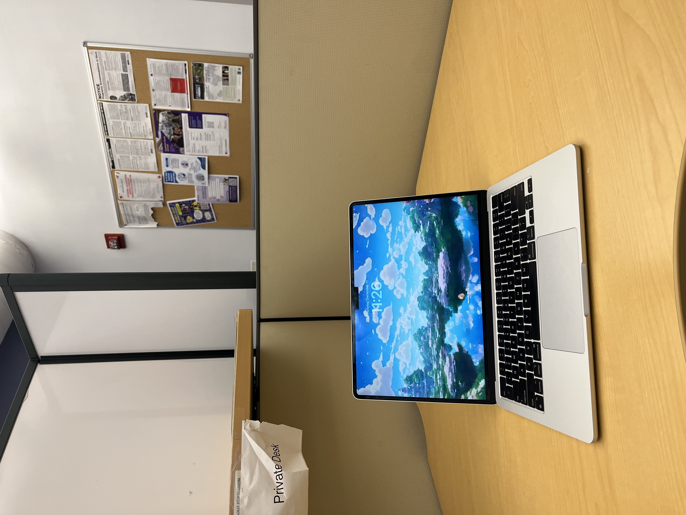

Job Title and Dates
Main Title: Operations Team | Location/Dates: NYU Department of Applied Psychology | April 2025 – Now
Overview Summary:
Supported the administrative, logistical, and operational functions for the NYU Department of Applied Psychology. The role required high attention to detail,efficient organization, and strong communication skills to ensure the smooth functioning of both common areas and essential resource management for faculty and staff.
Key Accomplishment:
- Data & Inventory Management: Created and actively managed an itemized inventory spreadsheet in Google Sheets to meticulously track departmental supplies, leading to improved resource allocation and reduced purchasing redundancy.
- Financial & Procurement Logistical Support: Processed and tracked departmental purchase orders (POs) using the iBuy system, ensuring the timely and accurate procurement of necessary supplies and maintaining clear records for financial reconciliation.
- Operational Maintenance: Successfully maintained functional common areas and essential resources by ensuring printers were operational, classrooms were organized, and supplies were consistently restocked for ongoing faculty and student use.
- Communication & Flow: Handled all incoming phone calls and directed inquiries to the appropriate staff or faculty members, demonstrating professional communication and enhancing the internal communication flow of the department.